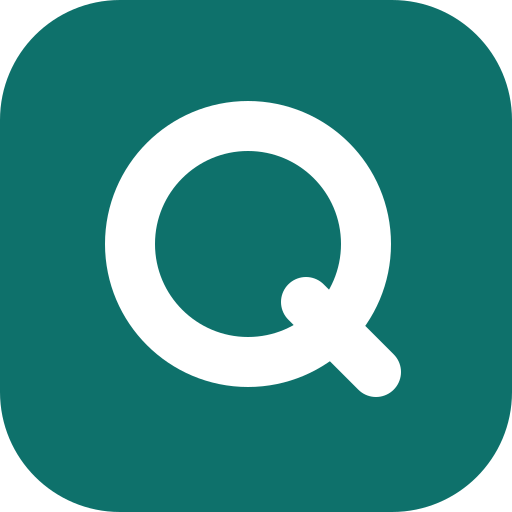
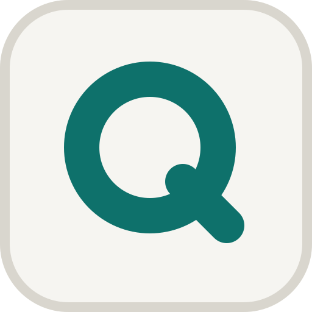
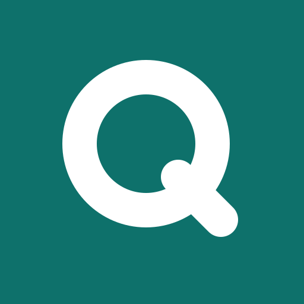

A · White tile (default)

Matches the white app canvas and keeps the full-colour mark. The ring and Midnight stethoscope separate it from wallpaper. This is the store icon.
Home-screen name CliniQ AI (domain thecliniqai.com). The final brand mark: a blue-to-teal ring forming the Q, with a stethoscope whose tube slips out as the tail. Drawn as paths, so it never depends on a font. Production PNGs for every platform are in the CliniQ AI brand kit.

Matches the white app canvas and keeps the full-colour mark. The ring and Midnight stethoscope separate it from wallpaper. This is the store icon.

The reversed mark on Midnight (#0B1A42), used for the iOS dark appearance.
Alternative for marketing and campaigns. Strongest on light wallpapers.

#FFFFFF (the top bar surface; the status bar merges with the app bar)#FFFFFF (round 2: the splash equals the white canvas)#246BCE CliniQ Blue status bar: more branded, but a coloured band above a white bar on every screen and white status icons